THINGS
I'VE MADE.
Een selectie van projecten waarin ik heb gewerkt aan interaction design, UX/UI, visual design, conceptontwikkeling en digitale ervaringen.
01 HAAK-APP UX / INTERACTION DESIGN Een mobiele app die haken toegankelijker en overzichtelijker maakt. +
HAAK-APP
Een mobiele app die gebruikers helpt bij het vinden, bewaren en uitvoeren van haakprojecten.
Binnen dit project heb ik gekeken naar de verschillende stappen die iemand tijdens het haken doorloopt en hoe deze overzichtelijk binnen één app kunnen samenkomen.
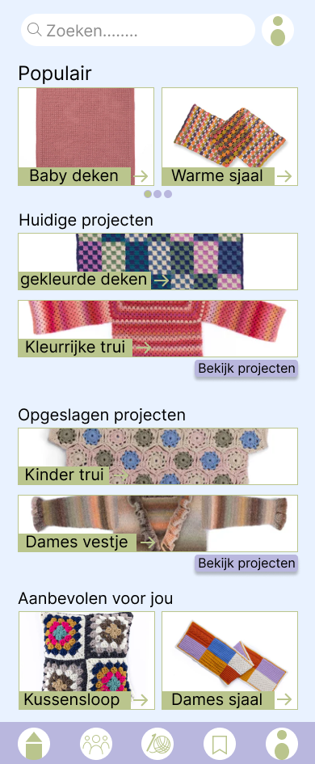

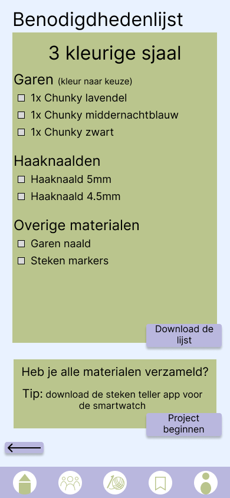

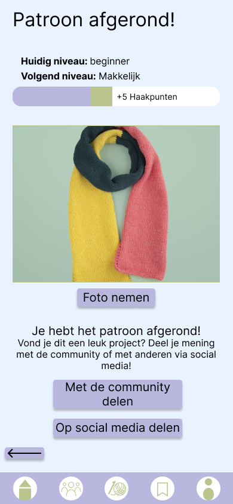
02 CONTENT DELIVERY UX / UI DESIGN Een dashboardconcept voor het overzichtelijk presenteren van data en inzichten. +
CONTENT
DELIVERY
Een dashboardconcept waarin informatie, inzichten en verschillende soorten data op een overzichtelijke manier worden samengebracht.
De focus lag op duidelijke informatie- hiërarchie en het begrijpelijk presenteren van verschillende soorten inzichten.
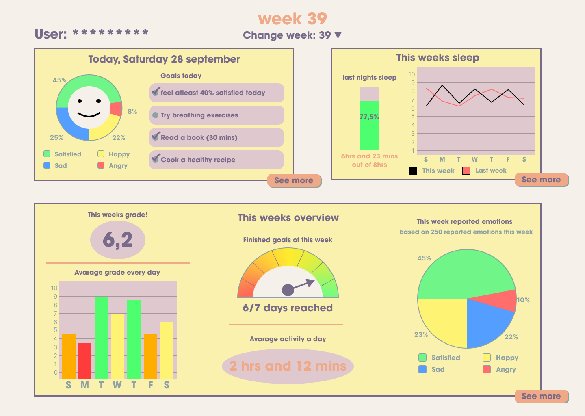
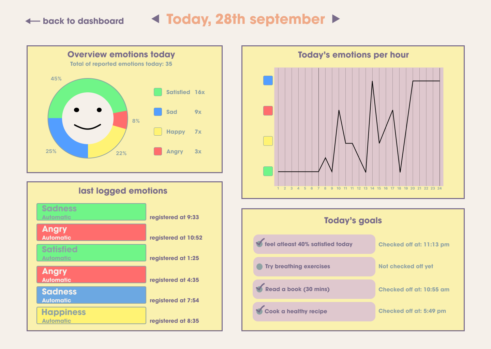
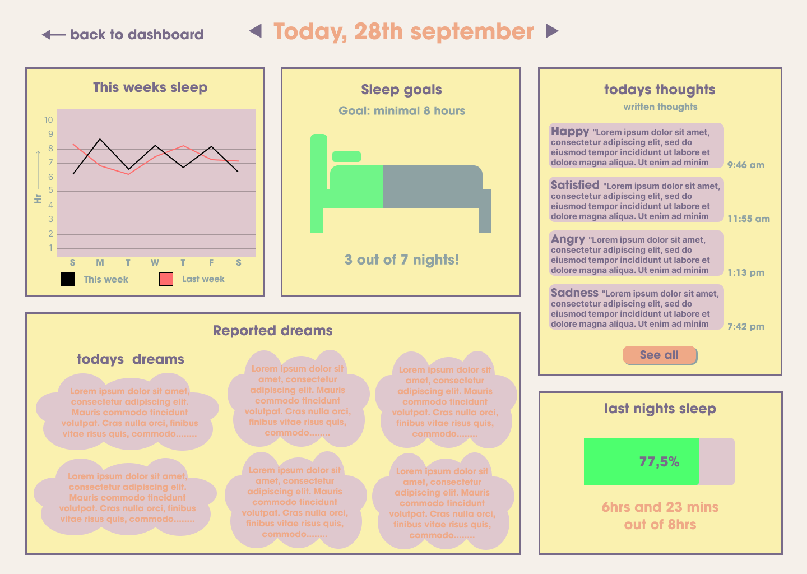
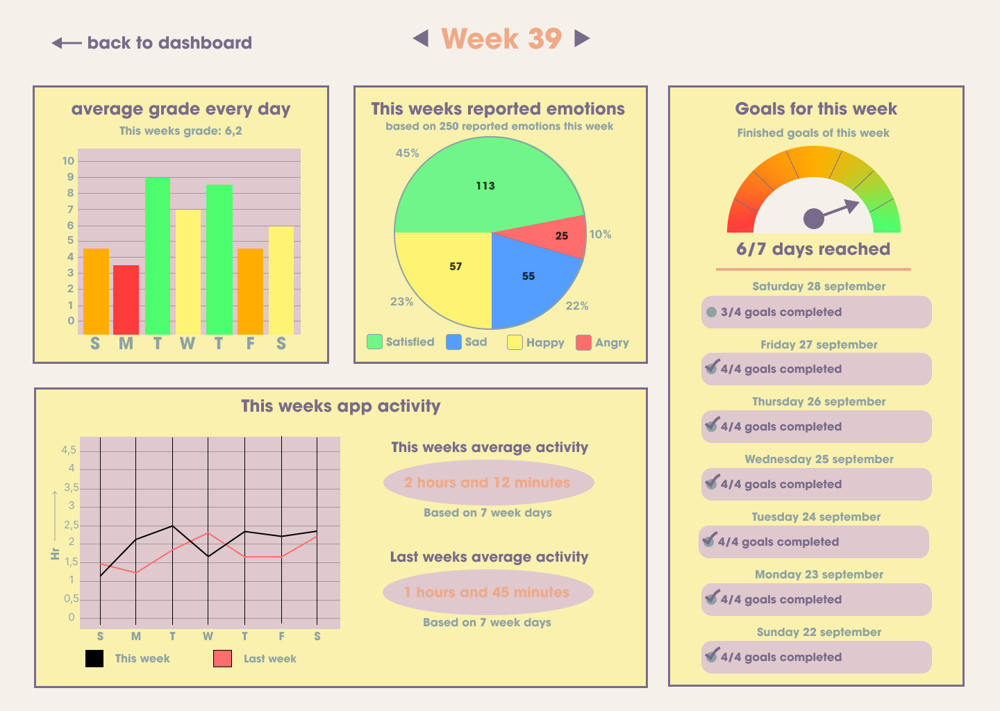
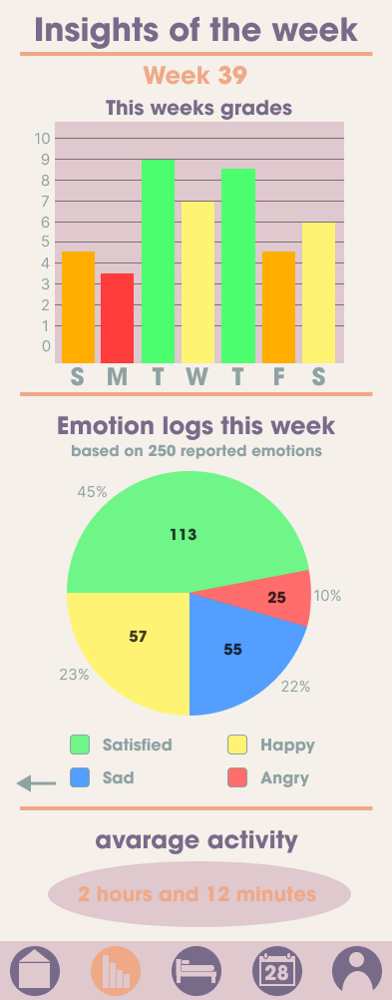
03 BOEKENZOEKER UX / VISUAL DESIGN Een digitale ervaring om boeken te ontdekken en passende keuzes te maken. +
BOEKENZOEKER
Een digitale ervaring waarin gebruikers op basis van verschillende voorkeuren op zoek kunnen gaan naar een passend boek.
Binnen het ontwerp heb ik gekeken naar de flow van zoeken en kiezen en naar de manier waarop verschillende keuzes en resultaten visueel worden gepresenteerd.

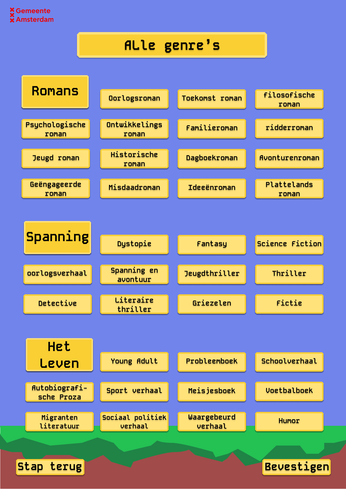
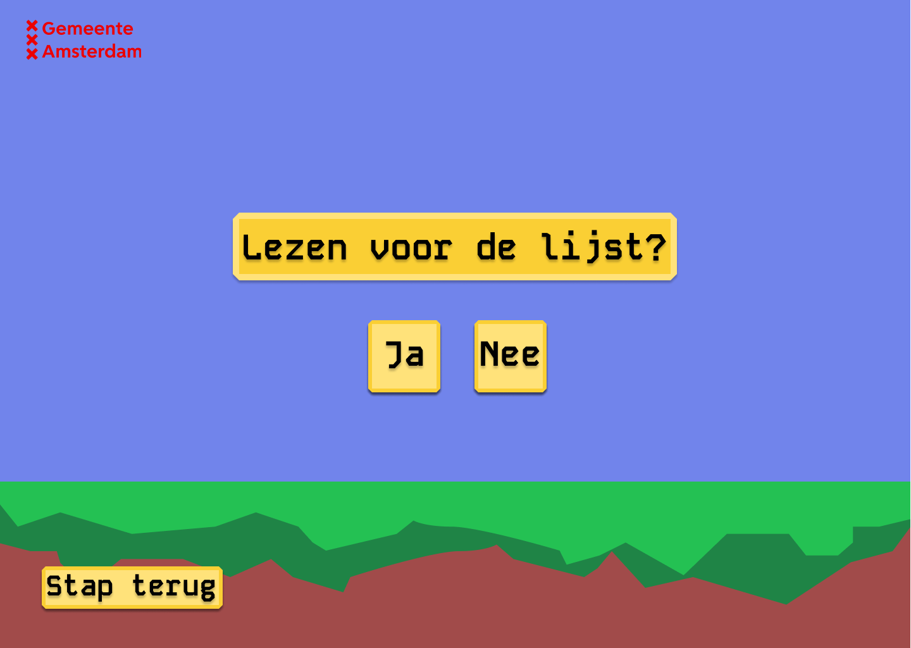
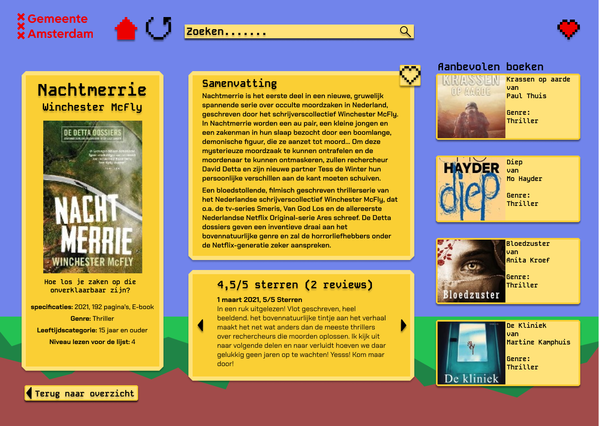
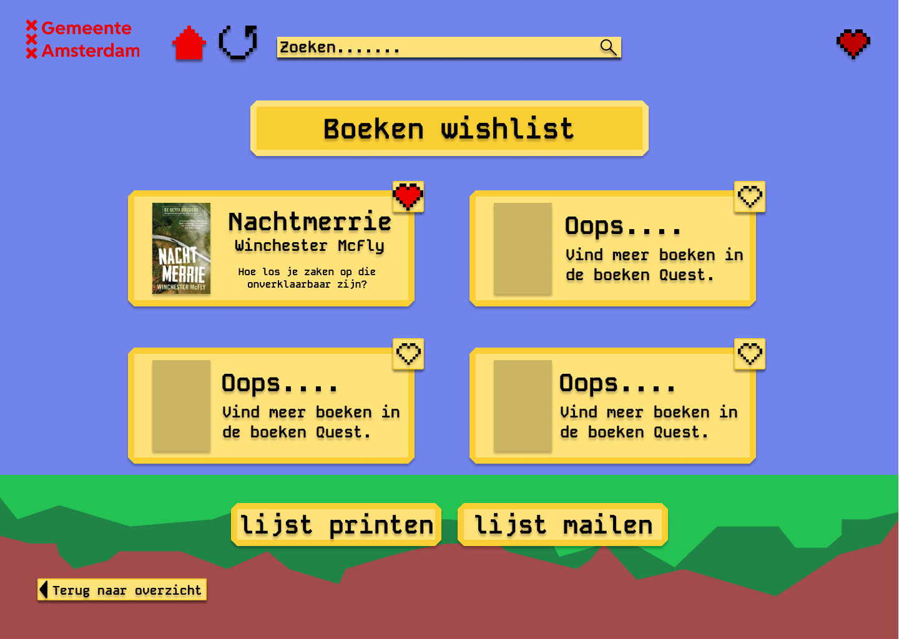
05 WEB DESIGN VISUAL / WEB DESIGN Een visueel websiteconcept waarin layout, typografie en verschillende schermformaten samenkomen. +
WEB
DESIGN
Een websiteconcept waarin ik heb geëxperimenteerd met layout, typografie, beeld en verschillende schermformaten.
Het project is uitgewerkt als visueel ontwerp in Figma en laat zien hoe het ontwerp zich kan vertalen naar laptop, tablet en mobiel.
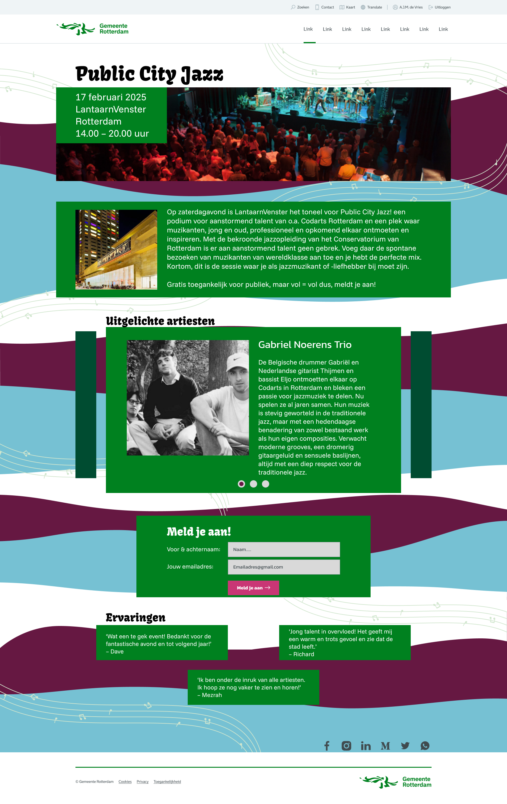
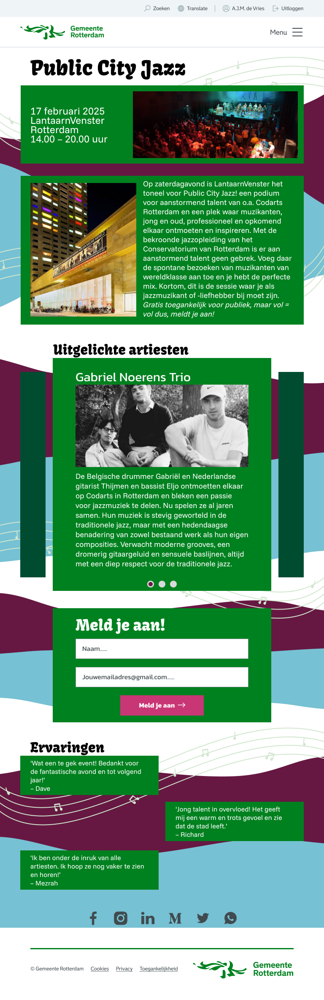


06 ONE-PAGE DESIGN VISUAL DESIGN Een visueel ontwerp waarin compositie, typografie en beeld centraal staan. +
ONE-PAGE
DESIGN
Een visueel ontwerp waarin de focus ligt op compositie, typografie, beeld en de verhouding tussen verschillende elementen.
Dit project laat vooral mijn interesse in visual design en het maken van sterke visuele composities zien.
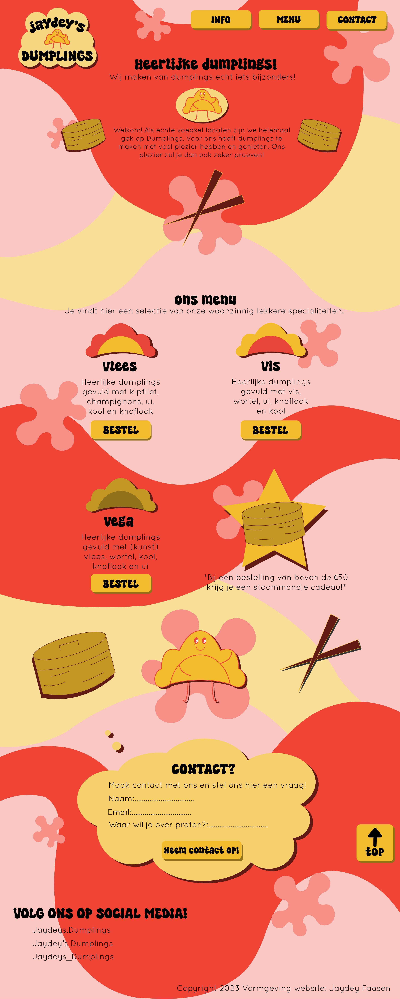